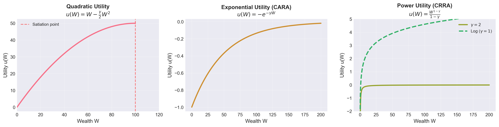
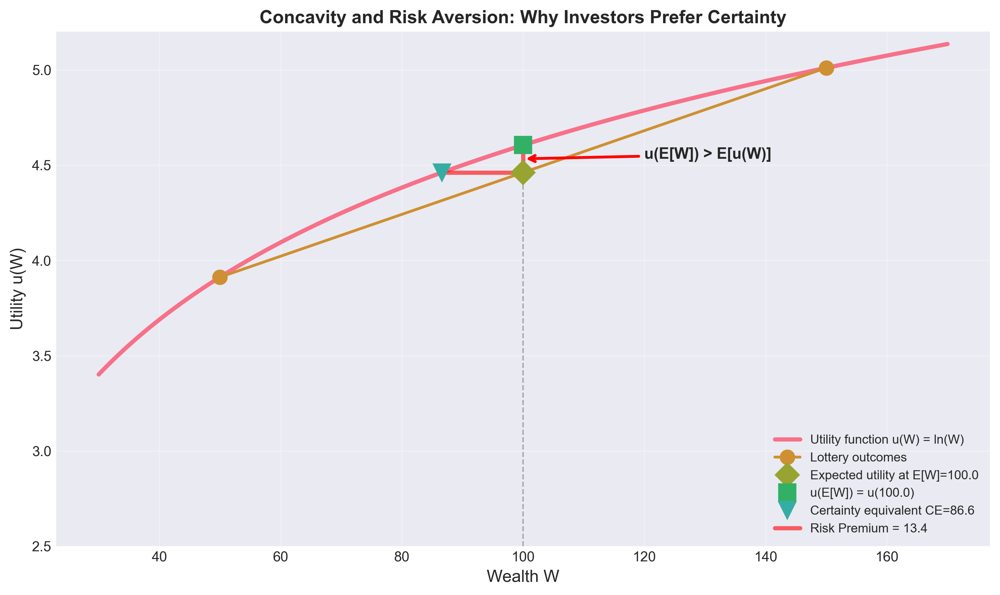
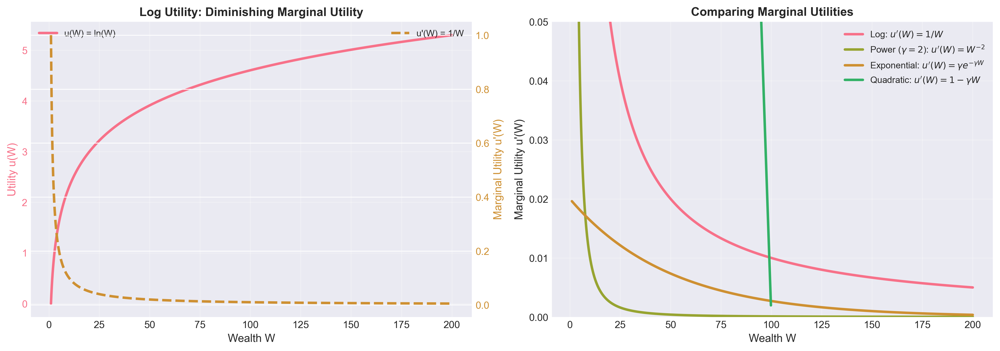
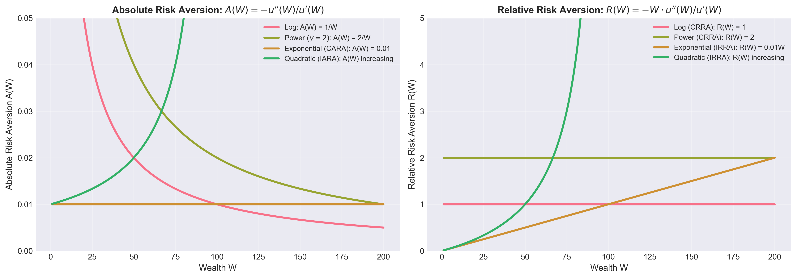
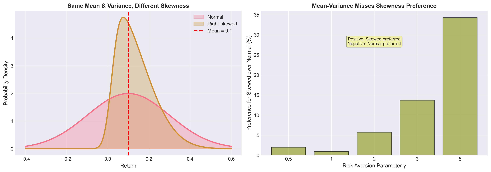
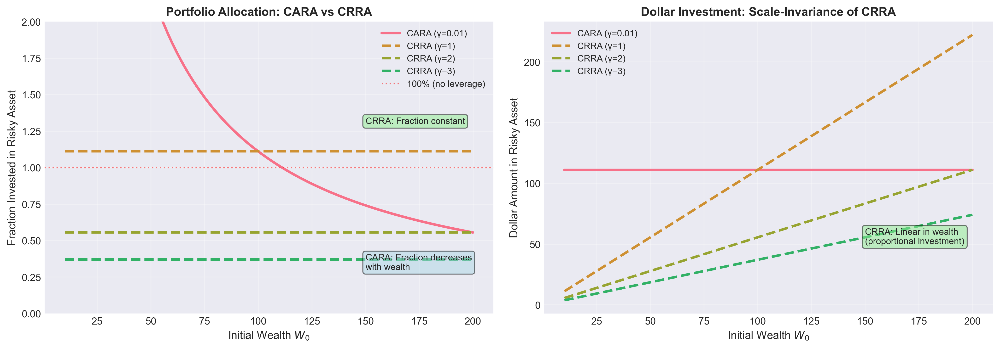

Utility Functions and Risk Aversion
Sukrit Mittal
Guest Faculty, IIIT Hyderabad
Outline
- Why utility?
- Preferences and rational choice
- Axioms of expected utility
- Expected utility maximization
- Common utility functions
- Risk aversion
- Utility, mean–variance, and CAPM
- Exercises
1. Why Utility?
Up to now, we used mean–variance preferences. Convenient but restrictive.
Utility theory answers a deeper question:
What does it mean to choose rationally under uncertainty?
Limitations of Mean–Variance
Recall:
\[ U(\mu, \sigma^2) = \mu - \frac{\gamma}{2}\sigma^2 \]
This framework:
- Works well for normally distributed returns
- Captures first two moments only
- Ignores skewness, kurtosis, tail risk
- Assumes quadratic preferences (problematic)
Example where mean-variance fails:
Consider two investments, both with \(\mu = 10\%\) and \(\sigma = 15\%\):
- Investment A: Returns are normally distributed
- Investment B: Returns are skewed—frequent small gains, rare catastrophic losses
Mean-variance treats them identically.
Most investors would not.
What Utility Theory Provides
- Generality: Works for any return distribution
- Foundation: Axiomatic basis for rational choice
- Flexibility: Can incorporate higher moments (skewness, etc.)
- Connection: Links to asset pricing (CAPM, beyond CAPM)
Utility theory is the rigorous foundation beneath portfolio theory.
What Utility Is Not
Utility is not:
- Money (more money doesn’t always mean more utility)
- Happiness (utility is not psychology)
- Psychological satisfaction (it’s a mathematical construct)
Utility is a numerical representation of preferences.
Key insight: Under certainty, utility is ordinal. Under expected utility over lotteries, it is cardinal up to a positive affine transformation.
If \(u(W_1) > u(W_2)\), we only know: \(W_1\) is preferred to \(W_2\).
The magnitude of the difference has no intrinsic meaning.
We used indifference curves to represent preferences graphically:
\[ \mu = \bar{U} + \frac{\gamma}{2}\sigma^2 \]
This was a special case of utility theory. Now we generalize.
2. Preferences and Choice
Consider uncertain outcomes (lotteries).
An investor can rank them:
- \(A \succ B\): “\(A\) is preferred to \(B\)”
- \(A \sim B\): “indifferent between \(A\) and \(B\)”
- \(A \preceq B\): “\(B\) is preferred to \(A\) or indifference”
Utility assigns numbers consistent with these rankings.
Example: Simple Preference Ranking (Setup)
Consider three wealth outcomes:
- Certain $100
- Lottery 1: 50% chance of $0, 50% chance of $200
- Lottery 2: 60% chance of $80, 40% chance of $150
Example: Simple Preference Ranking (Interpretation)
Consider three wealth outcomes:
- Certain $100
- Lottery 1: 50% chance of $0, 50% chance of $200
- Lottery 2: 60% chance of $80, 40% chance of $150
An investor ranks them: Lottery 2 \(\succ\) Certain $100 \(\succ\) Lottery 1
Expected values:
- Certain: $100
- Lottery 1: \(0.5(0) + 0.5(200) = \$100\)
- Lottery 2: \(0.6(80) + 0.4(150) = \$108\)
Note: Despite equal expected value, Certain $100 \(\succ\) Lottery 1 reveals risk aversion.
Rationality as Consistency
Rationality does not mean intelligence. It means:
- Consistent choices: No preference cycles
- Stable preferences: Today’s choices consistent with tomorrow’s
What Rationality Rules Out
Example of irrational behavior:
Suppose an investor states:
- \(A \succ B\)
- \(B \succ C\)
- \(C \succ A\)
This violates transitivity (one of our axioms below).
Why is this problematic?
- You’d trade \(A\) for \(C\) (since \(C \succ A\))
- Then trade \(C\) for \(B\) (since \(B \succ C\))
- Then trade \(B\) for \(A\) (since \(A \succ B\))
- Pay transaction costs each time
- End up back where you started, but poorer
3. Axioms of Expected Utility
To represent preferences by expected utility, we assume four axioms.
These axioms were formalized by von Neumann and Morgenstern (1944).
This axiomatization became foundational in modern economics and finance.
Axiom 1: Completeness
Statement: For any two lotteries \(A\) and \(B\), either: \(A \succ B\), or \(B \succ A\), or \(A \sim B\)
Interpretation: The investor can always compare and rank alternatives.
This rules out “incomparable” lottery pairs.
Critique: Strong assumption. In practice, people often face hard-to-compare choices.
Axiom 2: Transitivity
Statement: If \(A \succ B\) and \(B \succ C\), then \(A \succ C\).
Interpretation: Preferences are consistent. No cycles.
Without this, you’re vulnerable to money pumps (as shown earlier).
Critique: Reasonable. Violations indicate incoherent preferences.
Axiom 3: Continuity
Statement: If \(A \succ B \succ C\), there exists some probability \(p \in (0,1)\) such that:
\[ B \sim pA + (1-p)C \]
Interpretation: No outcome is infinitely better or worse than another.
No outcome is treated as lexicographically infinite in value.
Example: \(A\) = win $1 million; \(B\) = get $100,000; \(C\) = win $0
Continuity says: there’s some \(p\) where you’re indifferent between:
- Guaranteed $100,000
- Lottery giving \(p\) chance of $1M, \((1-p)\) chance of $0
In this example, \(p \approx 0.10\) makes the two options approximately comparable.
Critique: Philosophically controversial. But mathematically necessary for utility representation.
Axiom 4: Independence
Statement: If \(A \succ B\), then for any lottery \(C\) and \(p \in (0,1)\):
\[ pA + (1-p)C \succ pB + (1-p)C \]
Interpretation: Mixing both lotteries with a third option \(C\) preserves the ranking.
Example:
- \(A\) = $100 for sure
- \(B\) = 50% chance of $200, 50% chance of $0
- \(C\) = $50 for sure
If you prefer \(A\) to \(B\), then independence says you also prefer:
- 50% chance of \(A\), 50% chance of \(C\)
- to: 50% chance of \(B\), 50% chance of \(C\)
Critique: This is the most controversial axiom. Violated by many experimental subjects (Allais paradox). But necessary for expected utility representation.
Expected Utility Theorem (von Neumann–Morgenstern Theorem)
If preferences satisfy the four axioms, then:
There exists a utility function \(u(\cdot)\) such that preferences are represented by expected utility.
That is, for any lottery with outcomes \(W_1, \ldots, W_n\) and probabilities \(p_1, \ldots, p_n\):
\[ U = \mathbb{E}[u(W)] = \sum_{i=1}^n p_i u(W_i) \]
Interpretation:
- Preferences can be summarized by a single function \(u\)
- Choice reduces to maximizing expected utility
- This is a representation result
Why This Matters
This theorem tells us:
Rational preferences (satisfying axioms) \(\iff\) Expected utility maximization
We can model investor behavior using \(\max \mathbb{E}[u(W)]\)
All portfolio choice problems reduce to finding optimal \(W\) distributions
Limitation: The theorem only guarantees existence.
It does not tell us what \(u\) looks like.
That requires additional assumptions or estimation.
4. Expected Utility Maximization
Given wealth \(W\) as a random variable, the investor chooses portfolios to maximize expected utility, subject to budget constraints:
\[ \max \mathbb{E}[u(W)] \]
This is the most general formulation of choice under uncertainty.
Connection to Portfolio Theory
Recall that we found the optimal portfolio by solving mean-variance optimization: \[ \max_w \quad w^\top \mu - \frac{\gamma}{2} w^\top \Sigma w \]
Now we generalize: for any utility function \(u\): \[ \max_w \quad \mathbb{E}[u(w^\top \mu)] \]
Key difference:
- Mean-variance: assumes quadratic utility or normal returns
- Expected utility: works for any distribution and any \(u\)
Example: Portfolio Choice with Exponential Utility
Suppose, two assets: risk-free at \(R_f = 5\%\) and risky with \(\mu = 12\%\), \(\sigma = 20\%\); utility: \(u(W) = -e^{-\gamma W}\) with \(\gamma = 0.01\); initial wealth: \(W_0 = 100\)
Terminal wealth: \(W = W_0[1 + w R_S + (1-w)R_f]\), where \(w\) is the weight on the risky asset and \(R_S\) is its return.
Objective: \[ \max_w \mathbb{E}[-e^{-\gamma W_0[1 + w R_S + (1-w)R_f]}] \]
For normally distributed returns, using moment generating function of normal distribution, this simplifies to: \[ w^* = \frac{\mu - R_f}{\gamma \sigma^2 W_0} \]
Plugging in numbers: \[ w^* = \frac{0.12 - 0.05}{0.01 \times 0.04 \times 100} = \frac{0.07}{0.04} = 1.75 \]
Interpretation: Invest 175% in risky asset (leverage by borrowing 75% at \(R_f\)).
Utility Under Affine Transformations
If \(u\) represents preferences, so does: \[ \tilde u = a u + b \quad (a>0) \]
Proof sketch: If lottery \(A\) is preferred to \(B\) under \(u\): \[ \mathbb{E}[u(A)] > \mathbb{E}[u(B)] \]
Then under \(\tilde{u} = au + b\) with \(a > 0\): \[ \mathbb{E}[\tilde{u}(A)] = a\mathbb{E}[u(A)] + b > a\mathbb{E}[u(B)] + b = \mathbb{E}[\tilde{u}(B)] \]
The ranking is preserved.
Consequence: Preference rankings are preserved under positive affine transformations.
Example:
If \(u(W) = \ln(W)\) represents your preferences, so does: (a) \(\tilde{u}(W) = 10 \ln(W) + 5\); (b) \(\hat{u}(W) = 0.5 \ln(W) - 3\).
Only the shape of the utility curve matters, not its scale or location.
5. Common Utility Functions
Three utility functions dominate finance theory and practice. Each with strengths and weaknesses; and none is universally correct.

Figure: The three main utility functions used in finance. Quadratic has a satiation point (problematic), exponential is always increasing but wealth-independent, and power/log utilities are empirically most realistic.
Why These Three?
| Utility Function | Quadratic | Exponential (CARA) | Power (CRRA) |
|---|---|---|---|
| Key Features | Analytically tractable Justifies mean-variance Connection to CAPM |
Tractable under normal distributions Constant risk aversion Popular in derivatives pricing |
Empirically more realistic Used in asset pricing models Standard in macroeconomics |
| Typical Uses | Mean-variance analysis, CAPM | Derivatives pricing, theoretical models | Asset pricing, macroeconomics |
Let’s examine each in detail.
Quadratic Utility
\[ u(W) = W - \frac{\gamma}{2}W^2, \quad \gamma > 0 \] Properties:
- \(u'(W) = 1 - \gamma W > 0\) (increasing) for \(W < 1/\gamma\)
- \(u''(W) = -\gamma < 0\) (concave, risk-averse)
Mean–Variance Connection: For a random wealth \(W\) with \(\mathbb{E}[W] = \mu\) and \(\text{Var}(W) = \sigma^2\): \[ \mathbb{E}[u(W)] = \mathbb{E}\left[W - \frac{\gamma}{2}W^2\right] = \mathbb{E}[W] - \frac{\gamma}{2}\mathbb{E}[W^2] \] Expand \(W^2\) about the mean: \[ W^2 = (W - \mu + \mu)^2 = (W-\mu)^2 + 2\mu(W-\mu) + \mu^2 \] Taking expectations: \[ \mathbb{E}[W^2] = \mathbb{E}[(W-\mu)^2] + 2\mu\mathbb{E}[W-\mu] + \mu^2 = \sigma^2 + \mu^2 \] since \(\mathbb{E}[W-\mu] = 0\) (by definition of expected value).
Substitute back into expected utility: \[ \mathbb{E}[u(W)] = \mu - \frac{\gamma}{2}(\sigma^2 + \mu^2) = \mu - \frac{\gamma}{2}\sigma^2 - \frac{\gamma}{2}\mu^2 \] For small values of \(\mu^2\): \[ \max_w \left[\mu - \frac{\gamma}{2}\sigma^2 - \frac{\gamma}{2}\mu^2\right] \quad \iff \quad \max_w \left[\mu - \frac{\gamma}{2}\sigma^2\right] \]
Problems with Quadratic Utility
Problem 1: Satiation
Since \(u'(W) = 1 - \gamma W\), marginal utility becomes negative for \(W > 1/\gamma\).
Interpretation: Beyond a certain wealth level, more money makes you worse off!
This is not economically plausible.
Example: If \(\gamma = 0.01\), then \(u'(W) < 0\) for \(W > 100\).
No one refuses wealth above $100.
Problem 2: Increasing Absolute Risk Aversion (IARA)
As wealth increases, the investor becomes more risk-averse (in absolute terms).
Empirically false: wealthy people take on more risk in absolute dollars.
Problem 3: Asymmetry
Quadratic treats gains and losses asymmetrically in problematic ways.
Despite these flaws, quadratic utility is used because: * It delivers mean-variance * Mean-variance is tractable * CAPM requires it
This reflects a tractability-realism tradeoff.
Numerical Example: Quadratic Utility
Suppose \(\gamma = 0.01\) and consider two wealth levels:
- \(W_1 = 50\): \(u(50) = 50 - 0.005(2500) = 50 - 12.5 = 37.5\)
- \(W_2 = 100\): \(u(100) = 100 - 0.005(10000) = 100 - 50 = 50\)
Utility gain from doubling wealth: \(50 - 37.5 = 12.5\)
Now consider:
- \(W_3 = 100\): \(u(100) = 50\)
- \(W_4 = 150\): \(u(150) = 150 - 0.005(22500) = 150 - 112.5 = 37.5\)
Utility “gain”: \(37.5 - 50 = -12.5\) (utility decreases!)
This illustrates the satiation problem.
Exponential Utility (CARA)
\[ u(W) = -e^{-\gamma W}, \quad \gamma > 0 \]
Or equivalently (affine transformation):
\[ u(W) = -\frac{1}{\gamma}e^{-\gamma W} \]
Properties:
- \(u'(W) = \gamma e^{-\gamma W} > 0\) (always increasing)
- \(u''(W) = -\gamma^2 e^{-\gamma W} < 0\) (concave)
- No satiation point
- Defined for all \(W \in \mathbb{R}\)
Name: CARA = Constant Absolute Risk Aversion
We’ll see why shortly.
Why Exponential Utility?
Advantage 1: Tractability under normality
If \(W \sim N(\mu, \sigma^2)\), then: \[ \mathbb{E}[e^{-\gamma W}] = e^{-\gamma \mu + \frac{1}{2}\gamma^2\sigma^2} \] This is the moment generating function of the normal distribution. Therefore: \[ \mathbb{E}[u(W)] = -e^{-\gamma \mu + \frac{1}{2}\gamma^2\sigma^2} \] Taking logarithm (monotonic transformation preserves preferences): \[ \max \mathbb{E}[u(W)] \iff \max \left[\mu - \frac{\gamma}{2}\sigma^2\right] \] Mean-variance optimization again! But now without the satiation problem.
Advantage 2: Wealth-independent risk attitudes
With CARA, risk tolerance doesn’t change with wealth level.
This simplifies many models.
Problems with Exponential Utility
Main Issue: Constant absolute risk aversion is empirically false.
Example:
Consider a 50-50 gamble: win $1000 or lose $1000.
- Poor investor (wealth \(W = \$10,000\)): Probably rejects the gamble
- Wealthy investor (wealth \(W = \$10,000,000\)): Probably accepts the gamble
But CARA predicts both should make the same choice.
Why? Because risk aversion depends only on \(\gamma\), not on \(W\).
This pattern is inconsistent with most empirical evidence.
Wealthy people take bigger risks (in dollar terms) than poor people.
Despite this flaw: Exponential utility is widely used in: * Option pricing models * Portfolio optimization under normality * Theoretical analysis (tractability)
Numerical Example: Exponential Utility
Let \(\gamma = 0.0001\) and consider:
- \(W_1 = 50,000\): \(u(50,000) = -e^{-5} \approx -0.00674\)
- \(W_2 = 100,000\): \(u(100,000) = -e^{-10} \approx -0.0000454\)
- \(W_3 = 1,000,000\): \(u(1,000,000) = -e^{-100} \approx 0\) (effectively zero)
Marginal utility at \(W = 50,000\):
\[ u'(50,000) = 0.0001 e^{-5} \approx 0.0000674 \]
Marginal utility at \(W = 100,000\):
\[ u'(100,000) = 0.0001 e^{-10} \approx 0.00000454 \]
Marginal utility decreases (as wealth increases), but the ratio of marginal utilities to wealth remains constant.
Power Utility (CRRA)
\[ u(W) = \frac{W^{1-\gamma}}{1-\gamma}, \quad \gamma > 0, \gamma \neq 1 \]
Special case (\(\gamma = 1\)):
\[ u(W) = \ln(W) \]
Properties:
- \(u'(W) = W^{-\gamma} > 0\) (always increasing)
- \(u''(W) = -\gamma W^{-\gamma-1} < 0\) (concave)
- Defined only for \(W > 0\)
- No satiation
- \(\lim_{W \to 0^+} u(W) = -\infty\) (bankruptcy is infinitely bad)
Name: CRRA = Constant Relative Risk Aversion
Why Power Utility?
Advantage 1: Scale invariance
Consider scaling all payoffs by a constant \(\lambda > 0\). With power utility, preferences are unchanged.
Proof: Compare two lotteries \(A\) and \(B\).
\[ \mathbb{E}[u(\lambda W_A)] = \mathbb{E}\left[\frac{(\lambda W_A)^{1-\gamma}}{1-\gamma}\right] = \lambda^{1-\gamma}\mathbb{E}\left[\frac{W_A^{1-\gamma}}{1-\gamma}\right] \]
Similarly for \(B\). The factor \(\lambda^{1-\gamma}\) cancels when comparing.
Interpretation: If all prices and wealth double, behavior is unchanged.
This matches real-world observations: rich people don’t become infinitely risk-averse.
Advantage 2: Empirically realistic
Studies suggest \(\gamma \in [1, 10]\) for most investors. Log utility (\(\gamma = 1\)) is a common benchmark.
Advantage 3: Used in asset pricing
Power utility appears in: * Consumption CAPM (CCAPM) * Long-run risk models * Habit formation models
It’s the workhorse of modern macrofinance.
Numerical Example: Power Utility with \(\gamma = 2\)
\[ u(W) = \frac{W^{-1}}{-1} = -\frac{1}{W} \] Evaluate at different wealth levels:
- \(W_1 = 50\): \(u(50) = -0.02\)
- \(W_2 = 100\): \(u(100) = -0.01\)
- \(W_3 = 1000\): \(u(1000) = -0.001\)
Utility gain from doubling wealth (50 to 100): \[ \Delta u = -0.01 - (-0.02) = 0.01 \] Utility gain from doubling again (100 to 200): \[ \Delta u = -0.005 - (-0.01) = 0.005 \]
Observation: The utility gain from doubling wealth decreases.
For CRRA utility, the key property is: \[ R(W) = -W\frac{u''(W)}{u'(W)} = \gamma \] so relative risk aversion is constant.
Log Utility (\(\gamma = 1\))
\[ u(W) = \ln(W) \]
Special properties:
- Simplest CRRA function
- \(u'(W) = 1/W\)
- \(u''(W) = -1/W^2\)
- Often used as a benchmark
“Kelly Criterion” connection:
Maximizing \(\mathbb{E}[\ln(W)]\) is equivalent to maximizing long-run geometric growth rate.
This is the foundation of the Kelly betting strategy.
Example: With log utility and \(\gamma = 1\):
- \(u(50) = \ln(50) \approx 3.912\)
- \(u(100) = \ln(100) \approx 4.605\)
- \(u(200) = \ln(200) \approx 5.298\)
Utility gain from doubling: Always \(\ln(2) \approx 0.693\), regardless of starting point.
Comparing the Three Utility Functions
| Feature | Quadratic | Exponential (CARA) | Power (CRRA) |
|---|---|---|---|
| Form | \(W - \frac{\gamma}{2}W^2\) | \(-e^{-\gamma W}\) | \(\frac{W^{1-\gamma}}{1-\gamma}\) |
| Domain | \(W < 1/\gamma\) | \(W \in \mathbb{R}\) | \(W > 0\) |
| Satiation | Yes (major flaw) | No | No |
| Mean-variance | Exact | Under normality | No |
| Risk aversion | Increasing (IARA) | Constant (CARA) | Constant (CRRA) |
| Scale invariance | No | No | Yes |
| Empirical realism | Poor | Poor | Good |
| Tractability | High | High | Medium |
| Usage | Portfolio theory | Derivatives pricing | Asset pricing, macro |
Practical advice:
- Quadratic: Use only when mean-variance is required (CAPM)
- Exponential: Use for tractability under normality
- Power: Use when realism matters more than tractability
Most modern research uses power utility.
6. Risk Aversion
Risk aversion captures dislike for uncertainty.
Formally:
An investor is risk-averse if she prefers the expected value of a lottery to the lottery itself.
Mathematically:
\[ u(\mathbb{E}[W]) \geq \mathbb{E}[u(W)] \]
for all random wealth \(W\).
Interpretation: Certainty is valued over risk.
Three Types of Risk Attitudes
Risk-averse: \(u(\mathbb{E}[W]) > \mathbb{E}[u(W)]\) * Prefers certainty * Most investors
Risk-neutral: \(u(\mathbb{E}[W]) = \mathbb{E}[u(W)]\) * Indifferent between certainty and fair gambles * Rare in practice * Utility is linear: \(u(W) = aW + b\)
Risk-loving: \(u(\mathbb{E}[W]) < \mathbb{E}[u(W)]\) * Prefers risk over certainty * Gamblers, some entrepreneurs * Utility is convex: \(u''(W) > 0\)
From here on, we focus on risk-averse investors.
Example: Risk Aversion in Action
Consider two options: * Option A: $50 for certain * Option B: 50% chance of $100, 50% chance of $0
Expected value of both: $50
Risk-averse investor: Chooses Option A (certainty)
Risk-neutral investor: Indifferent
Risk-loving investor: Chooses Option B (gamble)
Most people choose Option A—evidence of risk aversion.
Concavity and Risk Aversion
Theorem: An investor is risk-averse if and only if \(u\) is concave.
\[ u''(W) \leq 0 \]
This single inequality drives everything.
Proof
Direction 1: Concavity \(\implies\) Risk aversion
Suppose \(u\) is concave. By Jensen’s inequality:
\[ u(\mathbb{E}[W]) \geq \mathbb{E}[u(W)] \]
This is exactly the definition of risk aversion. ✓
Direction 2: Risk aversion \(\implies\) Concavity
Suppose \(u(\mathbb{E}[W]) \geq \mathbb{E}[u(W)]\) for all \(W\).
Consider a 50-50 lottery between \(W_1\) and \(W_2\):
\[ u\left(\frac{W_1 + W_2}{2}\right) \geq \frac{1}{2}u(W_1) + \frac{1}{2}u(W_2) \]
This is the definition of concavity (for discrete case).
Extending to continuous case gives \(u''(W) \leq 0\). ✓
Graphical Interpretation

Figure: Concave utility functions generate risk aversion. The utility of expected wealth u(E[W]) exceeds the expected utility E[u(W)], creating a risk premium. The investor prefers the certainty equivalent (CE) over the risky lottery.
For a concave function:
- The curve lies below any secant line
- Marginal utility \(u'(W)\) is decreasing
- More wealth provides less additional satisfaction
Key insight:
Losing $10 hurts more than gaining $10 feels good.
This asymmetry explains risk aversion.
Certainty Equivalent and Risk Premium
Certainty Equivalent (CE):
The certain amount that gives the same utility as the risky lottery.
\[ u(CE) = \mathbb{E}[u(W)] \]
Risk Premium (RP):
The amount an investor will pay to avoid risk.
\[ RP = \mathbb{E}[W] - CE \]
Interpretation:
- \(RP > 0\) for risk-averse investors
- \(RP = 0\) for risk-neutral
- \(RP < 0\) for risk-loving
Example: Certainty Equivalent
Suppose \(u(W) = \ln(W)\) and consider:
- 50% chance of $100
- 50% chance of $25
Expected value:
\[ \mathbb{E}[W] = 0.5(100) + 0.5(25) = 62.5 \]
Expected utility:
\[ \mathbb{E}[u(W)] = 0.5\ln(100) + 0.5\ln(25) = 0.5(4.605) + 0.5(3.219) = 3.912 \]
Certainty equivalent: Solve \(\ln(CE) = 3.912\)
\[ CE = e^{3.912} = 50 \]
Risk premium:
\[ RP = 62.5 - 50 = 12.5 \]
Interpretation: The investor is willing to pay $12.50 to avoid the risk and receive $50 for certain instead of the gamble with expected value $62.50.
Diminishing Marginal Utility

Figure: (Left) Log utility and its derivative showing diminishing marginal utility. (Right) Comparison of marginal utilities across different utility functions. All concave utilities exhibit decreasing marginal utility, but at different rates.
Key observation: The first dollar is more valuable than the millionth dollar.
This is the foundation of risk aversion.
Arrow–Pratt Measures of Risk Aversion
Two measures quantify how risk-averse an investor is.
Developed independently by Kenneth Arrow and John Pratt (1960s).
Absolute Risk Aversion (ARA)
\[ A(W) = -\frac{u''(W)}{u'(W)} \]
Interpretation:
- Measures risk aversion in absolute terms (dollars)
- Higher \(A(W)\) = more risk-averse
- Determines optimal portfolio allocation
Why this formula?
Consider a small risk \(\tilde{\varepsilon}\) with \(\mathbb{E}[\tilde{\varepsilon}] = 0\) and variance \(\sigma^2\).
Second-order Taylor expansion:
\[ \mathbb{E}[u(W + \tilde{\varepsilon})] \approx u(W) + u'(W)\mathbb{E}[\tilde{\varepsilon}] + \frac{1}{2}u''(W)\sigma^2 \]
\[ = u(W) + \frac{1}{2}u''(W)\sigma^2 \]
Risk premium for small risk:
\[ RP \approx \frac{1}{2}A(W)\sigma^2 \]
So \(A(W)\) directly determines willingness to bear small risks.
Relative Risk Aversion (RRA)
\[ R(W) = -W\frac{u''(W)}{u'(W)} = W \cdot A(W) \]
Interpretation:
- Measures risk aversion in relative terms (percentages)
- More intuitive for wealth comparisons
- Standard measure in asset pricing
Why multiply by \(W\)?
\(R(W)\) measures aversion to proportional risks.
If wealth doubles, how do risk attitudes change?
- Constant \(A(W)\) (CARA): Double wealth, same dollar risk tolerance
- Constant \(R(W)\) (CRRA): Double wealth, double dollar risk tolerance
CRRA is more realistic.

Figure: (Left) Absolute risk aversion A(W) for different utility functions. CARA has constant A(W), while CRRA has decreasing A(W). (Right) Relative risk aversion R(W). CRRA utilities have constant R(W), matching empirical evidence that investors maintain constant portfolio fractions.
Computing ARA and RRA for Common Functions
1. Quadratic: \(u(W) = W - \frac{\gamma}{2}W^2\)
\[ u'(W) = 1 - \gamma W, \quad u''(W) = -\gamma \]
\[ A(W) = -\frac{-\gamma}{1 - \gamma W} = \frac{\gamma}{1 - \gamma W} \]
\[ R(W) = W \cdot \frac{\gamma}{1 - \gamma W} = \frac{\gamma W}{1 - \gamma W} \]
Observation: Both \(A(W)\) and \(R(W)\) increase with \(W\) (IARA and IRRA).
This is unrealistic: suggests rich people are more risk-averse. ✗
2. Exponential (CARA): \(u(W) = -e^{-\gamma W}\)
\[ u'(W) = \gamma e^{-\gamma W}, \quad u''(W) = -\gamma^2 e^{-\gamma W} \]
\[ A(W) = -\frac{-\gamma^2 e^{-\gamma W}}{\gamma e^{-\gamma W}} = \gamma \]
\[ R(W) = W \cdot \gamma \]
Observation: * \(A(W) = \gamma\) is constant (CARA—as the name suggests) ✓ * \(R(W) = \gamma W\) increases linearly with wealth (IRRA) ✗
CARA is tractable but not empirically realistic.
3. Power (CRRA): \(u(W) = \frac{W^{1-\gamma}}{1-\gamma}\)
\[ u'(W) = W^{-\gamma}, \quad u''(W) = -\gamma W^{-\gamma-1} \]
\[ A(W) = -\frac{-\gamma W^{-\gamma-1}}{W^{-\gamma}} = \frac{\gamma}{W} \]
\[ R(W) = W \cdot \frac{\gamma}{W} = \gamma \]
Observation: * \(A(W) = \gamma/W\) decreases with wealth (DARA—realistic!) ✓ * \(R(W) = \gamma\) is constant (CRRA—as the name suggests) ✓
Power utility has the best empirical properties.
Special Case: Log Utility
For \(u(W) = \ln(W)\) (which is CRRA with \(\gamma = 1\)):
\[ u'(W) = \frac{1}{W}, \quad u''(W) = -\frac{1}{W^2} \]
\[ A(W) = \frac{1}{W}, \quad R(W) = 1 \]
Interpretation: Relative risk aversion of 1.
This is often considered a “moderate” level of risk aversion.
Numerical Example: Comparing Risk Aversion
Consider three investors at \(W = 100\):
| Utility | \(A(100)\) | \(R(100)\) | Risk attitude |
|---|---|---|---|
| Quadratic (\(\gamma = 0.01\)) | 0.01 | 1 | Moderate |
| Exponential (\(\gamma = 0.01\)) | 0.01 | 1 | Moderate |
| Power (\(\gamma = 2\)) | 0.02 | 2 | More risk-averse |
| Log | 0.01 | 1 | Moderate |
Now at \(W = 200\):
| Utility | \(A(200)\) | \(R(200)\) | Change |
|---|---|---|---|
| Quadratic (\(\gamma = 0.01\)) | 0.0125 | 2.5 | Both increase (IARA, IRRA) |
| Exponential (\(\gamma = 0.01\)) | 0.01 | 2 | \(A\) constant, \(R\) doubles (CARA) |
| Power (\(\gamma = 2\)) | 0.01 | 2 | \(A\) halves, \(R\) constant (CRRA) |
| Log | 0.005 | 1 | \(A\) halves, \(R\) constant (CRRA) |
Key insight: Only CRRA (power/log) maintains constant relative risk aversion as wealth changes.
This matches empirical evidence that rich people invest a constant fraction of wealth in risky assets.
Typical Values of \(\gamma\) (RRA)
Empirical studies and calibration exercises suggest:
| \(\gamma\) | Risk Attitude | Typical Investor |
|---|---|---|
| \(< 1\) | Low risk aversion | Aggressive, young investors |
| \(1\) (log utility) | Moderate | Benchmark |
| \(2-4\) | Moderate-high | Typical household |
| \(5-10\) | High | Conservative investors |
| \(> 10\) | Very high | Near retirement, very cautious |
Equity premium puzzle: Some asset pricing models require \(\gamma > 10\) to match historical stock returns.
This seems implausibly high—ongoing research topic.

Figure: Risk premiums for the same lottery under different CRRA utility functions. Higher γ (more risk aversion) leads to larger risk premiums. The investor with γ=3 demands much more compensation to accept risk than the investor with γ=0.5.
7. Utility, Mean–Variance, and CAPM
Mean-variance optimization (Lectures 06-07) and CAPM (Lecture 08) assumed investors care only about \(\mu\) and \(\sigma^2\).
When is this justified?
Two sufficient conditions:
- Quadratic utility: \(u(W) = W - \frac{\gamma}{2}W^2\)
- Normally distributed returns + any concave utility
Under either condition, expected utility reduces to mean-variance form.
Condition 1: Quadratic Utility
We showed earlier that with \(u(W) = W - \frac{\gamma}{2}W^2\):
\[ \mathbb{E}[u(W)] = \mathbb{E}[W] - \frac{\gamma}{2}\mathbb{E}[W^2] \]
\[ = \mu - \frac{\gamma}{2}(\sigma^2 + \mu^2) \]
For optimization over portfolios with similar \(\mu\), the \(\mu^2\) term is approximately constant.
Result:
\[ \max \mathbb{E}[u(W)] \quad \iff \quad \max \left[\mu - \frac{\gamma}{2}\sigma^2\right] \]
This is exactly the mean-variance criterion from Lecture 06.
Limitation: Quadratic utility has serious flaws (satiation, IARA).
So we need an alternative justification…
Condition 2: Normal Returns
Theorem: If returns are normally distributed, then any risk-averse investor behaves as if maximizing mean-variance utility.
Proof sketch:
Let \(W = W_0(1 + R_p)\) where \(R_p \sim N(\mu_p, \sigma_p^2)\).
Then \(W \sim N(W_0(1+\mu_p), W_0^2\sigma_p^2)\).
For any utility function \(u\):
\[ \mathbb{E}[u(W)] = \int_{-\infty}^{\infty} u(W_0(1+r)) \frac{1}{\sqrt{2\pi\sigma_p^2}} e^{-\frac{(r-\mu_p)^2}{2\sigma_p^2}} dr \]
Under normality, the distribution of \(W\) is fully characterized by \(\mu_p\) and \(\sigma_p^2\).
So portfolio comparisons can be summarized in \((\mu_p, \sigma_p^2)\) space (for a fixed utility specification).
Preferences can be summarized by indifference curves in \((\sigma, \mu)\) space.
Key insight: This justification doesn’t require quadratic utility!
Works with exponential, power, or any concave \(u\).
Are Returns Normal?
Reality check: Empirically, returns are not perfectly normal.
Deviations from normality:
- Fat tails: Extreme events more common than normal
predicts
- Crashes, crises
- “Black swan” events
- Skewness: Return distributions often asymmetric
- Some assets have positive skew (lottery-like payoffs)
- Others have negative skew (crash risk)
- Time-varying volatility: Variance is not constant
- Volatility clustering
Despite violations: Normal approximation is often “good enough” for: * Portfolio optimization * Risk measurement (for moderate horizons) * Asset pricing (as a baseline)
But for tail risk, derivatives pricing, and crisis periods, normality fails badly.

Figure: (Left) Two return distributions with identical mean and variance but different skewness. (Right) Expected utility comparison shows that mean-variance optimization misses important preference information. Investors with CRRA utility may prefer the skewed distribution despite identical mean-variance characteristics.
8. Utility and CAPM
Recall CAPM from Lecture 08:
\[ \mathbb{E}[R_i] - R_f = \beta_i(\mathbb{E}[R_M] - R_f) \]
Where \(\beta_i = \frac{\text{Cov}(R_i, R_M)}{\text{Var}(R_M)}\).
CAPM assumptions:
- Mean–variance optimization (all investors)
- Homogeneous expectations
- Perfect markets
- Single period
- Risk-free borrowing/lending
Utility foundation:
Assumption #1 (mean-variance) is justified by:
- Quadratic utility, or
- Normal returns (which make mean-variance summaries sufficient under expected utility)
Without one of these, mean-variance optimization is just a heuristic.
With these, it’s optimal behavior.
Connecting Utility to CAPM
From Lecture 08, all investors hold:
- The market portfolio \(M\) (risky assets)
- The risk-free asset
The mix depends on risk aversion \(\gamma\) (from Lecture 06):
\[ w^* = \frac{\mu_M - R_f}{\gamma \sigma_M^2} \]
Equilibrium condition: Market clearing requires the market portfolio to be optimal for the “representative investor.”
This pins down the relationship between expected returns and betas.
Key result: If all investors maximize expected utility under quadratic or normal assumptions, CAPM holds in equilibrium.
What if Returns Aren’t Normal?
CAPM breaks down when:
- Returns have fat tails
- Skewness matters to investors
- Higher moments (kurtosis) are important
Extensions:
- Higher-moment CAPM: Include skewness and kurtosis in pricing
- Downside risk models: Focus on left tail (semi-variance, VaR)
- Factor models: Fama-French, etc. (multiple sources of systematic risk)
These generalizations move beyond mean-variance.
But they lose the elegance and tractability of CAPM.
What Changes with General Utility?
Moving beyond quadratic/normal assumptions:
1. Market portfolio need not be mean–variance efficient
- With non-normal returns and CRRA utility, investors care about skewness
- Optimal portfolios tilt toward positive skew, away from negative skew
- Market portfolio reflects these preferences
2. Pricing relations become nonlinear
- Beta alone no longer determines expected return
- Co-skewness, co-kurtosis may matter
- Factor models with multiple risk dimensions
3. Heterogeneous preferences complicate equilibrium
- If investors have different \(u\), they disagree on portfolio rankings
- No single optimal risky portfolio
- Aggregation is complex
4. Time and state-dependent preferences
- Habit formation models
- Epstein-Zin preferences (separating risk aversion from intertemporal substitution)
- State-dependent risk aversion
Modern asset pricing: Uses general utility functions (often power utility) to explain:
- Equity premium puzzle
- Volatility puzzle
- Predictability of returns
The cost: Much less tractable than CAPM.
The benefit: More realistic.
Summary: Utility Foundations of Portfolio Theory
| Lecture | Framework | Utility Assumption |
|---|---|---|
| 06 | Risk-free + risky assets, CAL | Mean-variance (implicit) |
| 07 | Multi-asset portfolios, MVP | Mean-variance (implicit) |
| 08 | CAPM, beta pricing | Quadratic or normality |
| 09 | General expected utility | Expected utility with concave \(u\) (risk-averse case) |
Progression:
- Lectures 06-08: Assumed mean-variance without justification
- Lecture 09: Provided rigorous foundation via utility theory
Key takeaway:
Mean-variance is not arbitrary.
It is optimal under specific conditions:
- Quadratic utility (flawed but convenient)
- Normal returns (approximately true, but fails in tails)
When these fail, we need richer models.
But mean-variance remains the benchmark.
CAPM is elegant, but real-world return distributions are richer than mean-variance summaries.
Utility theory clarifies both the strengths and limits of the CAPM benchmark.

Figure: (Left) Portfolio allocation as a fraction of wealth. CARA investors reduce their allocation as wealth increases, while CRRA investors maintain constant fractions. (Right) Dollar investment in risky assets. CRRA utilities exhibit scale-invariance—doubling wealth doubles dollar investment, maintaining constant portfolio fractions.
Empirical evidence: CRRA better matches observed behavior.
Rich people invest more dollars in risky assets, but maintain similar portfolio fractions to poorer investors.
9. Exercises
Exercise 1: Risk Aversion and Concavity
Part (a): Show that concavity of \(u\) implies risk aversion using Jensen’s inequality.
Part (b): Give an example of a risk-averse investor rejecting a fair gamble.
Solution:
(a) By Jensen’s inequality, for a concave function \(u\) and random variable \(W\):
\[ u(\mathbb{E}[W]) \geq \mathbb{E}[u(W)] \]
This is exactly the definition of risk aversion: the investor prefers the certain expected value to the risky lottery.
(b) Let \(u(W) = \ln(W)\) and \(W_0 = 100\).
Consider a fair gamble: 50% chance of winning $20, 50% chance of losing $20.
Expected value: \(\mathbb{E}[W] = 0.5(120) + 0.5(80) = 100\)
Expected utility of gamble:
\[ \mathbb{E}[u(W)] = 0.5\ln(120) + 0.5\ln(80) \approx 0.5(4.787) + 0.5(4.382) = 4.585 \]
Utility of certain amount:
\[ u(100) = \ln(100) \approx 4.605 \]
Since \(4.605 > 4.585\), the investor rejects the fair gamble.
Exercise 2: Arrow-Pratt Measures
Part (a): Compute absolute and relative risk aversion for exponential utility:
\[ u(W) = -e^{-\gamma W} \]
Part (b): Interpret why this is called “CARA” (Constant Absolute Risk Aversion).
Part (c): Show that for power utility \(u(W) = \frac{W^{1-\gamma}}{1-\gamma}\), relative risk aversion is constant.
Solution:
(a) For \(u(W) = -e^{-\gamma W}\):
\[ u'(W) = \gamma e^{-\gamma W}, \quad u''(W) = -\gamma^2 e^{-\gamma W} \]
Absolute risk aversion:
\[ A(W) = -\frac{u''(W)}{u'(W)} = -\frac{-\gamma^2 e^{-\gamma W}}{\gamma e^{-\gamma W}} = \gamma \]
Relative risk aversion:
\[ R(W) = W \cdot A(W) = W\gamma \]
(b) \(A(W) = \gamma\) is constant—independent of wealth level.
This means a $1000 risk is equally undesirable whether you have $10,000 or $1,000,000.
Empirically unrealistic, but mathematically convenient.
(c) For \(u(W) = \frac{W^{1-\gamma}}{1-\gamma}\):
\[ u'(W) = W^{-\gamma}, \quad u''(W) = -\gamma W^{-\gamma-1} \]
\[ R(W) = -W\frac{u''(W)}{u'(W)} = -W\frac{-\gamma W^{-\gamma-1}}{W^{-\gamma}} = \gamma \]
Constant in \(W\)—hence “CRRA.”
Exercise 3: Certainty Equivalent and Risk Premium
An investor with \(u(W) = W^{0.5}\) (CRRA with \(\gamma = 0.5\)) faces a lottery:
- 60% chance of $100
- 40% chance of $25
Part (a): Compute the expected value of the lottery.
Part (b): Compute the certainty equivalent.
Part (c): Compute the risk premium.
Part (d): If the investor had \(u(W) = \ln(W)\) instead, would the risk premium be higher or lower? Explain intuitively.
Solution:
(a) Expected value:
\[ \mathbb{E}[W] = 0.6(100) + 0.4(25) = 60 + 10 = 70 \]
(b) Expected utility:
\[ \mathbb{E}[u(W)] = 0.6\sqrt{100} + 0.4\sqrt{25} = 0.6(10) + 0.4(5) = 6 + 2 = 8 \]
Certainty equivalent: Solve \(\sqrt{CE} = 8\)
\[ CE = 64 \]
(c) Risk premium:
\[ RP = \mathbb{E}[W] - CE = 70 - 64 = 6 \]
(d) For \(u(W) = \ln(W)\):
\[ \mathbb{E}[\ln(W)] = 0.6\ln(100) + 0.4\ln(25) \approx 0.6(4.605) + 0.4(3.219) = 4.051 \]
\[ CE = e^{4.051} \approx 57.4 \]
\[ RP = 70 - 57.4 = 12.6 \]
Higher risk premium because log utility (\(\gamma = 1\)) exhibits more risk aversion than square-root utility (\(\gamma = 0.5\)).
Exercise 4: Mean-Variance and Normal Returns
Suppose returns are normally distributed: \(R \sim N(0.12, 0.04)\) (\(\mu = 12\%\), \(\sigma^2 = 4\%\)).
Part (a): For an investor with exponential utility \(u(W) = -e^{-\gamma W}\) and \(\gamma = 0.01\), show that maximizing expected utility is equivalent to maximizing \(\mu - \frac{\gamma}{2}\sigma^2\).
Part (b): Compute the certainty equivalent return for this investor.
Part (c): Would an investor with quadratic utility \(u(W) = W - 0.005W^2\) rank portfolios differently? Explain.
Solution:
(a) For normal \(R\), the moment generating function gives:
\[ \mathbb{E}[e^{-\gamma W_0(1+R)}] = e^{-\gamma W_0(1+\mu) + \frac{1}{2}\gamma^2 W_0^2 \sigma^2} \]
Maximizing \(\mathbb{E}[-e^{-\gamma W}]\) is equivalent to minimizing the exponent:
\[ \min \left[-\gamma W_0(1+\mu) + \frac{1}{2}\gamma^2 W_0^2 \sigma^2\right] \]
\[ \iff \max \left[\mu - \frac{\gamma W_0}{2}\sigma^2\right] \]
For fixed \(W_0\), this is mean-variance.
(b) Certainty equivalent return \(r_{CE}\) satisfies:
\[ -e^{-\gamma W_0(1+r_{CE})} = \mathbb{E}[-e^{-\gamma W_0(1+R)}] \]
\[ r_{CE} = \mu - \frac{\gamma W_0}{2}\sigma^2 = 0.12 - \frac{0.01 \times W_0}{2} \times 0.04 \]
For \(W_0 = 100\):
\[ r_{CE} = 0.12 - 0.02 = 0.10 = 10\% \]
(c) With quadratic utility, expected utility is:
\[ \mathbb{E}[W - 0.005W^2] \approx W_0(1+\mu) - 0.005[W_0^2(1+\mu)^2 + W_0^2\sigma^2] \]
This also reduces to mean-variance form (ignoring higher-order terms).
So both investors rank portfolios identically under normality.
Exercise 5: Skewed Returns
Consider two investments with the same mean (\(\mu = 10\%\)) and variance (\(\sigma^2 = 4\%\)):
- Investment A (symmetric): 50% chance of -10%, 50% chance of +30%
- Investment B (right-skewed): 80% chance of 0%, 20% chance of +50%
Part (a): Verify that both have \(\mu = 10\%\) and \(\sigma^2 = 4\%\).
Part (b): For an investor with \(u(W) = \ln(W)\) and \(W_0 = 100\), compute expected utility for both investments.
Part (c): Which investment does the investor prefer? Why does mean-variance fail here?
Solution:
(a) Investment A: \[ \mu_A = 0.5(-0.10) + 0.5(0.30) = 0.10 \] \[ \sigma_A^2 = 0.5(-0.10-0.10)^2 + 0.5(0.30-0.10)^2 = 0.5(0.04) + 0.5(0.04) = 0.04 \]
Investment B: \[ \mu_B = 0.8(0.00) + 0.2(0.50) = 0.10 \] \[ \sigma_B^2 = 0.8(0.00-0.10)^2 + 0.2(0.50-0.10)^2 = 0.8(0.01) + 0.2(0.16) = 0.04 \]
So both have identical mean and variance, but different skewness.
(b) For \(W_0 = 100\):
Investment A gives wealth outcomes \(90\) and \(130\): \[ \mathbb{E}[\ln(W_A)] = 0.5\ln(90) + 0.5\ln(130) \approx 4.684 \]
Investment B gives wealth outcomes \(100\) and \(150\): \[ \mathbb{E}[\ln(W_B)] = 0.8\ln(100) + 0.2\ln(150) \approx 4.686 \]
(c) The investor prefers Investment B since \(4.686 > 4.684\).
Mean-variance fails because it uses only \((\mu,\sigma^2)\) and ignores higher moments (here, skewness), while expected utility is sensitive to full distributional shape.
Exercise 6: Portfolio Choice with CRRA
An investor with \(u(W) = \frac{W^{1-\gamma}}{1-\gamma}\) and \(\gamma = 2\) must allocate between:
- Risk-free asset: \(R_f = 5\%\)
- Risky asset: \(\mu = 15\%\), \(\sigma = 30\%\)
Initial wealth: \(W_0 = 100\).
Part (a): Write the optimization problem.
Part (b): For CRRA utility with normally distributed returns, the optimal allocation is:
\[ w^* = \frac{\mu - R_f}{\gamma \sigma^2} \]
Compute \(w^*\).
Part (c): Compare this to the result for exponential utility with \(\gamma = 0.02\) (from Exercise 4). Which investor takes more risk in absolute dollars?
Solution:
(a) Optimization problem:
\[ \max_w \mathbb{E}\left[\frac{(W_0[w(1+R_S) + (1-w)(1+R_f)])^{1-\gamma}}{1-\gamma}\right] \]
Subject to: \(0 \leq w \leq 1\) (if no leverage/shorting allowed).
(b) Optimal allocation:
\[ w^* = \frac{0.15 - 0.05}{2 \times 0.09} = \frac{0.10}{0.18} \approx 0.556 = 55.6\% \]
Invest 55.6% in risky asset, 44.4% in risk-free.
(c) For exponential utility (CARA):
\[ w^* = \frac{\mu - R_f}{\gamma \sigma^2 W_0} = \frac{0.10}{0.02 \times 0.09 \times 100} = \frac{0.10}{0.18} \approx 0.556 \]
Same optimal weight! But this is a special case where parameters align.
In general: * CRRA: \(w\) independent of \(W_0\) (scale-invariant) * CARA: \(w\) decreases with \(W_0\) (richer people take less risk as a fraction)
Exercise 7: Comparing Utility Functions
For each utility function below, calculate \(A(100)\) and \(R(100)\):
- \(u_1(W) = \sqrt{W}\)
- \(u_2(W) = \ln(W)\)
- \(u_3(W) = -\frac{1}{W}\)
Part (a): Rank the utilities by risk aversion at \(W = 100\).
Part (b): Which utility exhibits CRRA? Identify the \(\gamma\) parameter.
Part (c): Show that \(u_3(W) = -1/W\) is the CRRA form with \(\gamma = 2\).
Solution:
(a)
\(u_1(W) = W^{0.5}\) (CRRA with \(\gamma = 0.5\)): \[A(100) = \frac{0.5}{100} = 0.005, \quad R(100) = 0.5\]
\(u_2(W) = \ln(W)\) (CRRA with \(\gamma = 1\)): \[A(100) = \frac{1}{100} = 0.01, \quad R(100) = 1\]
\(u_3(W) = -W^{-1}\) (CRRA with \(\gamma = 2\)): \[A(100) = \frac{2}{100} = 0.02, \quad R(100) = 2\]
Ranking by risk aversion: \(u_3 > u_2 > u_1\)
(b) All three exhibit CRRA with \(\gamma = 0.5, 1, 2\) respectively.
(c) The CRRA family is \[ u(W)=\frac{W^{1-\gamma}}{1-\gamma}. \] Setting \(\gamma=2\) gives \[ u(W)=\frac{W^{-1}}{-1}=-\frac{1}{W}=u_3(W). \] So \(u_3\) is exactly CRRA with \(\gamma=2\).
Final Takeaways
- Utility formalizes rational choice under
uncertainty
- von Neumann-Morgenstern axioms provide foundation
- Expected utility is the standard criterion under vNM axioms
- Utility is unique up to positive affine transformations
- Risk aversion is equivalent to concavity
- \(u''(W) < 0\) captures dislike for risk
- Arrow-Pratt measures quantify risk aversion
- Absolute vs. relative risk aversion
- Three utility functions dominate practice
- Quadratic: Mean-variance, but flawed (satiation, IARA)
- Exponential (CARA): Tractable, constant absolute risk aversion
- Power (CRRA): Empirically realistic, constant relative risk aversion
- Mean–variance is a special case of expected utility
- Justified by quadratic utility or normal returns
- When these assumptions fail, need general utility
- CAPM relies on mean-variance foundation
- Connection to portfolio theory
- Lectures 06-08 assumed mean-variance implicitly
- Lecture 09 provided rigorous utility foundation
- Modern asset pricing uses CRRA utility
- Beyond CAPM
- Non-normal returns require general utility
- Skewness, kurtosis, tail risk matter
- Factor models and higher-moment CAPM
Key insight: Utility theory is not psychology—it’s a mathematical framework for consistent choice under uncertainty.
Next lecture: We explore specific risk measures beyond variance—Value-at-Risk (VaR) and coherent risk measures.
Because investors care about downside risk, not just volatility.